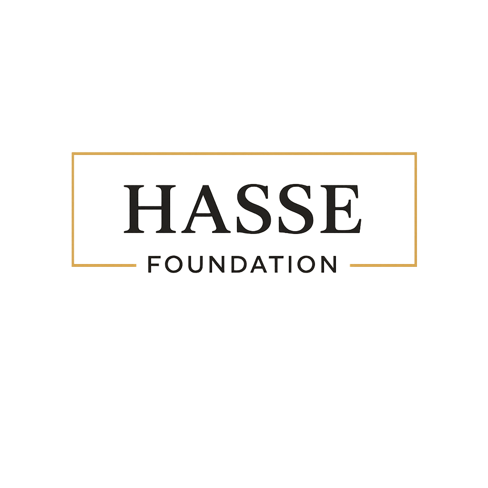

International Cooperation & Strategic Grants
Beyond traditional national and multilateral sources, the c-ECO Platform demonstrates strong alignment with international funding programs focused on climate innovation, Earth system science, environmental governance, and data infrastructure.
Phase 1: Foundation & Pilots
Model Law Framework
Comprehensive legal architecture for pre-threshold governance, including trajectory-based liability frameworks, reversibility finance instruments, and TFP (Threshold Function Protocol) integration into national and international law.
TFP Operations Manual
Technical documentation defining Threshold Function Protocol variables, Green/Amber/Red band calibration methodologies, and operational procedures for Earth system observation-to-decision pipelines.
Pilot Implementation
Proof-of-concept deployment validating TDR (Threshold Dynamics Research) methodology in live operational environments, with empirical data from Amazon Living Lab and sectoral vertical testing.
"Phase 1 establishes the foundational infrastructure. Phase 2 scales to full operational capacity across 13 sectoral verticals."
Organizational Structure
Full-stack implementation team spanning Earth system science, AI/ML, legal architecture, and field operations.
Layer 10 — Institutional Effects
Global Scientific Director
c-ECO / TDR Doctrine & Threshold Dynamics Research
Global Executive Director
Operations & Institutional Relations
Chief Legal Officer
Model Law / IEX / Governance Architecture
Director of Institutional Relations
Government / Congress / Multilateral
Stewardship


TDR Core — Layers 0-9
Layer 0 — Earth System Observation
Environmental Data Engineering • Remote Sensing
Layer 1 — Data Governance (DVB)
Data Verification Body • QA • Audit
Layer 2 — Indicator Architecture
Taxonomy • Environmental Metrics
Layer 3 — TDR Analytical Engine
Complex Systems • Mathematical Modeling • ML
Layer 4 — Calibration
Scientific Advisory Board • Peer Review
Layer 5 — TFP Variables
Threshold Function Protocol Definition
Layer 6 — Operational Scores
SPS • TRS • RLS Aggregation
Layer 7 — Reversibility Finance
Capital Architecture • Restoration Funds
Layer 8 — Prudential Engine
Automated Response • State Machine
Layer 9 — TDR → TFP Interface
Scientific-to-Governance Translation
13 Sectoral Verticals
SSVF Implementation Teams
Living Lab Amazonia
Field Operations & Empirical Validation
International Task Force
Scientific Diplomacy & Global Partnerships
c-ECO Academy
Capacity Building & Knowledge Transfer
Implementation Budget
Foundation & Pilots
- • Model Law framework completion
- • TFP Manual & scientific validation
- • Pilot deployments (3-5 sectors)
- • Living Lab Amazonia setup
- • Core team assembly
Complete Infrastructure
- • 13 sectoral verticals operational
- • Full TDR Layers 0-10 active
- • International Task Force deployed
- • c-ECO Academy scaling
- • Global partnership network
Strategic Funding Sources
World Bank — Amazon Pro-Sustainability
Framework for Financial Incentives
The World Bank's $592.5M operation for the Amazon region links fiscal sustainability to forest conservation, using the FFI (Framework for Financial Incentives) with $22M grants for deforestation reduction goals.
Inter-American Development Bank
Amazonia Forever / AMDTF
IDB's Amazonia Forever program includes the $50M+ Amazon Bioeconomy and Forests Management Multi-Donor Trust Fund (Germany, Netherlands, Switzerland, UK, Italy). Recent $250M BB Amazônia Program with GCF.
Brazilian Scientific Collaboration
Strategic partnerships with Brazil's leading Earth system science institutions, leveraging COP30 momentum in Belém (2025).
Carlos Nobre & Amazonia 4.0
Strategic AlignmentDr. Carlos Nobre, Earth System scientist and Nobel Laureate, leads the Amazonia 4.0 initiative—developing a "Third Way" bioeconomy paradigm that transcends the conservation vs. extraction debate.
His work includes mobile co-creation labs, genetic sequencing of Amazon species with blockchain commercialization, and "bio-skins" from indigenous species—directly complementary to c-ECO's Living Lab approach.
Institutional Legacy
- • Founder, CPTEC/INPE
- • Architect, LBA Experiment
- • Former Chair, IGBP
- • IPCC Member
- • Royal Society Foreign Member
- • UN SAB Global Sustainability
INPE
National Institute for Space Research
Brazil's premier Earth observation institution. Active collaboration with ESA Biomass mission and UK CSSP Brazil program for forest carbon monitoring.
IPAM
Amazon Environmental Research Institute
Key actor in REDD+ landscape and Amazon Fund design. Partners with Imazon, Conexsus, and Global Landscapes Forum.
Museu Emílio Goeldi
Pará • COP30 Legacy
Historic Swiss-Brazilian scientific institution. Hosted the House of Switzerland at COP30 in Belém (2025), consolidating international scientific cooperation in the Amazon.
CEMADEN
National Center for Natural Disaster Monitoring
Founded by Carlos Nobre. Advanced early warning systems for climate disasters. Critical for TDR risk layers.
FAPESP
São Paulo Research Foundation
Active calls: Climate Change Research (R$ 200M budget), Bioeconomy (Germany partnership), BiodivConnect, Water4All.
CNPq
National Research Council
Bilateral cooperation calls: TÜBİTAK (Turkey) for climate/biodiversity, FCT (Portugal) for climate-health research.
Strategic Positioning
"The interdisciplinary nature of the c-ECO Platform — integrating Earth system science, artificial intelligence, and legal architecture — enables simultaneous qualification across multiple international funding lines, significantly expanding resource mobilization capacity."
This positions the initiative as:
- ◆ Scientific innovation project
- ◆ Climate governance infrastructure
- ◆ Data and territorial intelligence platform
- ◆ International cooperation instrument
Hybrid Investment Model
The c-ECO Center operates under a hybrid investment model, combining institutional contributions from partner foundations with resource mobilization through public innovation funding instruments and partnerships with the productive sector.
This model enables the implementation of an unprecedented scientific and institutional infrastructure, with continuous operation capacity and long-term sustainability.
Long-Term Financial Sustainability
In the medium and long term, c-ECO was designed to operate based on its own financial sustainability model, linked to its application in real economic operations.
Productive projects • Financial instruments
Governance structures • TFP compliance
Reduced public dependence • Self-financing